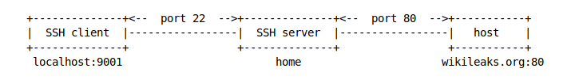
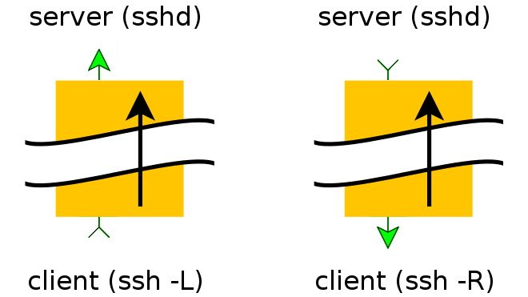
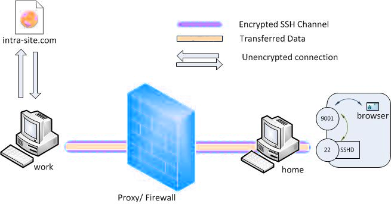

SSH tunnels explained
Secure Shell (SSH) can be used to securely acquire and use a remote terminal session and has other uses as well. You can use SSH to tunnel traffic, transfer files, mount remote file systems, and more. SSH also uses strong encryption and you can set your SSH client to act as a Socks proxy. Once you have, you can configure applications on your computer – such as your web browser – to use the Socks proxy. The traffic enters the Socks proxy running on your local system and the SSH client forwards it through the SSH connection – this is known as SSH tunneling. This works similar to browsing the web over a Virtual Private Network (VPN). From a web server perspective, traffic appears to be coming from the SSH server. The traffic between source and the SSH server is encrypted, so you can browse over an encrypted connection as you could with a VPN. You must configure each application to use the SSH tunnel’s proxy.
Port forwarding or port mapping is a name given to the combined technique of:
Translating the address and/or port number of a packet to a new destination.
Possibly accepting such packet(s) in a packet filter (firewall).
Forwarding the packet according to the routing table.
SSH tunnels can be created in several ways using different kinds of port forwarding mechanisms.
Tunnelling with local port forwarding
Imagine wikileaks being blocked using a proxy filter in a university network somewhere. A SSH tunnel can be used to bypass this restriction.
Let’s name the machine in the university network //socially-correct// and a home machine //home//. The home machine has a public IP and is running a SSH server. The student in case has //ssh user access// on //home// and //socially-correct// has access to host:hostport (is not blocked).
$ ssh -L localport:host:hostport user@home -N
where:
-L: port forwarding parameterslocalport: local port (choose a port that is not in use by other service)host: server that has the port (hostport) that you want to forwardhostport: remote port-N: do not execute a remote command (you will not have the shell).user: user that hassshaccess to the ssh serverhome: the machine/server running thesshserver that will be used for forwarding/tunneling
For example, to create the SSH tunnel execute following from the //socially-correct machine//:
$ ssh -L 9001:wikileaks.org:80 user@home

Open a browser and go to http://localhost:9001 to see if the tunnel is working.
The SSH client at socially-correct will connect to the SSH server running at home (usually running at port 22) binding port 9001 of socially-correct to listen for local requests thus creating a SSH tunnel between home and socially-correct. At the home end it will create a connection to wikileaks.org at port 80. So socially-correct doesn’t need to know how to connect to wikileaks.org. Only home needs to worry about that. The channel between socially-correct and home will be encrypted while the connection between home and wikileaks.org will be unencrypted.
The home-to-wikileaks.org connection is only made when the browser makes the request, not at tunnel setup time.
The SSH man pages say:
-L port:host:hostportspecifies that the given port on the local (client) host is to be forwarded to the given host and port on the remote side. This works by allocating a socket to listen to port on the local side, and whenever a connection is made to this port, the connection is forwarded over the secure channel, and a connection is made to host port hostport from the remote machine. Port forwardings can also be specified in the configuration file. Only root can forward privileged ports. IPv6 addresses can be specified with an alternative syntax:port/host/hostport-NDo not execute a remote command. This is useful for just forwarding ports (protocol version 2 only).
Local port forwarding can also be used to set up a VNC session between socially-correct and a home server. From socially-correct:
$ ssh -L 5900:localhost:5900 user@home
The localhost is relative to the gateway (home in this case), not the machine from where the tunnel is initiated. So this will make a connection to port 5900 of the home computer where the VNC client would be listening.
Reverse tunnelling with remote port forwarding
To be able to SSH from the Internet into a machine behind a firewall, you need the machine in question to open an SSH connection to the outside world and include a -R tunnel whose “entry” point is the “remote” side of his connection.

What if we wish to connect to an internal university website from home with a set-up like above in tunnelling with local port forwarding? The university firewall is blocking all incoming traffic. We can connect from home to the university internal network so that we can browse the internal site. We can initiate the tunnel from the socially-correct computer behind the firewall. This is possible since only incoming traffic is blocked and outgoing traffic is allowed. The client will now be at the home computer and instead of using the -L option, the -R option, which specifies a reverse tunnel is to be created, is used.
From socially-correct:
$ ssh -R 9001:internalsite.org:80 user@home
The SSH client at socially-correct will connect to the SSH server running at home creating a SSH channel. The server will bind port 9001 on the home machine to listen for incoming requests that are then routed through the created SSH channel between home and socially-correct. Now it’s possible to browse the internal site by visiting http://localhost:9001 in a web browser on the home machine. The socially-correct machine for work at the university will then create a connection to internalsite.org and relay back the response to home via the created SSH channel.

Even though the traffic is encrypted, the name resolution may not be encrypted => DNS leakage. Programs like firefox allow you to ensure that there is no such DNS leakage. In firefox, browse to about:config and make sure the setting for network.proxy.socks_remote_dns is set to true.
Dynamic port forwarding
Dynamic port forwarding allows for configuring one local port for tunnelling data to all remote destinations. This requires Socket Secure SOCKS. At the client side of the tunnel a Socks proxy would be created and the application uses the Socks protocol to specify where the traffic should be sent when it leaves the other end of the ssh tunnel. In a set-up like used in local port forwarding and reverse port forwarding, from the socially-correct machine at university:
$ ssh -D 9001 user@home
SSH will create a Socks proxy listening in for connections at local port 9001 and when receiving a request routes the traffic via the SSH channel created between socially-correct and home. Configure the browser to point to the Socks proxy at port 9001 at localhost.